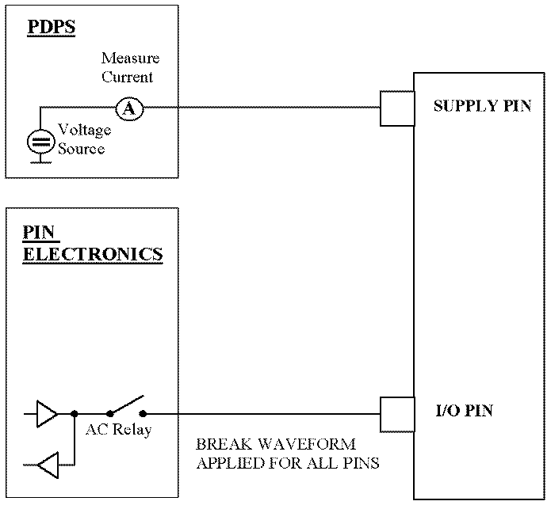

ProductionIddq
This test method measures the quiescent power supply current (IDDQ) of a device, using the device power supplies.
It allows you to perform a sequence of production IDDQ measurements at different vectors or cycles in a single test.
Measurements can be performed with respect to a (list of) DPS pin(s) or DCScale pin(s) in DPS mode. If a list of DPS pins are specified then the sum of all IDDQ currents measured or the current measured for each DPS pin can be given back.

Firstly, the test system is set to the CONNECTED state, with the AC relays closed, the sequencer set to BREAK and the DPS set to the voltage programmed in Level Setup. The test system then:
- checks the specified dps pinsfor applicable pins (dps pin only). If you specify a list of dps pins, the test method will either return the sum of the production Iddq currents sourced by the dps pins specified or the production Iddq current for each dps pin.
- checks the disconnectPins for applicable pins. By default, the AC relays for all AC pins are closed for the IDDQ measurement. This means that for all these pins, the break waveform is sent to the device during the measurement. However, if this is not suitable for your test, you can disconnect (AC relays open) a pin or more pins for the measurement.
- if a vector orcycle is specified, the delay counter is set to stop the sequencer at the
specified vector or cycle. The specified vector or cycle is also executed.
If a list of vectors or cycles is specified, the delay counter is first set to stop the sequencer at the first vector or cycle specified, then at the second vector or cycle and all subsequent vectors or cycles specified.
Note If no vector or cycle number is specified but checkFunctional is ON, the whole pattern will be executed before current measurement.
A functional test is executed, and stopped at the first vector or cycle you define. The AC relays for all disconnected pins are then opened, and the break waveform is generated at all other AC pins. You can specify whether the result of this functional test shall contribute to the overall test result or not. If the result of the functional test contributes to the overall test result a failing functional test will always cause a fail overall test result regardless of the production Iddq currents measured.
After the settling time, the Iddq current is measured by the DPS at the specified pins. The measurements are made in a serial mode.
Any result value in the range of pass limit gives a pass result.
This is repeated for all vectors or cycles you have specified (in the order as specified). That is, if you set up a list with N vectors or cycles, N production Iddq measurement results are returned by the test method.
You can also define how often the measurement is made before a result is returned by specifying a sample number. Default number is 16.
Execution Time for a Sample
For the GP-DPS, the test method performs auto ranging. Dependent on which range the final measurement is taken, a measurement burst is performed with the number of specified samples. Because of the auto ranging mechanism, the total number of measurements taken depends on how many trials were necessary to find the right measurement range.
In addition, because the measurements are controlled by the system controller the real total execution time also depends on the system controller speed. As a conclusion, it cannot be specified exactly how long the test method will take.
Dependencies
- The device must be kept stable during the dc measurement.
Limits
If you define new test names in the parameter testName, you need to add limits to the test suite with the same test name. (Refer to Adding a limit in the Properties view and Adding a limit on the Tests page.)
Implementation pseudo code
IF not already connected THEN connect DUT ENDIF FOR all the vectors/cycles in the list run to the stop vector/cycle IF test fails AND check functional selected THEN set result fail ENDIF disconnect pins in the disconnect pin list measure the current on the DPS pins connect the disconnected pins ENDFOR IF ganged mode selected THEN add the measured result of each pin judge the pass/fail result ENDIF datalog test result
Functional changes
- Introduced in SmarTest 6.5.4
- SmarTest 7.1.1: Mixed usage of test table and testflow limits in one testflow is supported in TML 2.1.1.
- SmarTest 7.2.1: New parameter controlTestNumOfFunctional is added.
- SmarTest 7.2.1: New option ShowFailOnly for the parameter output in TML 2.2.0.